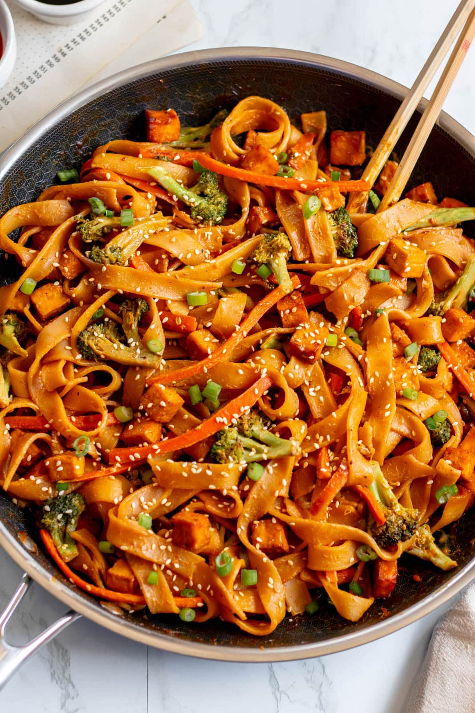
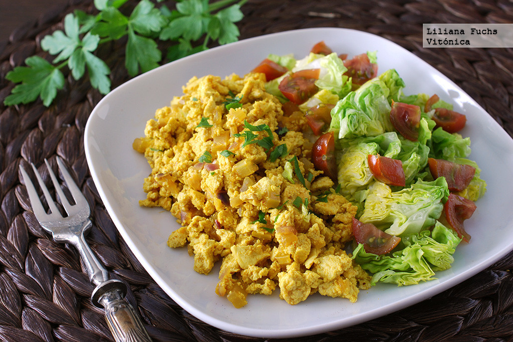
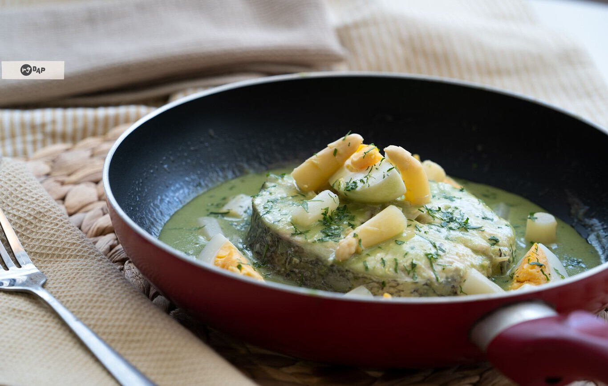
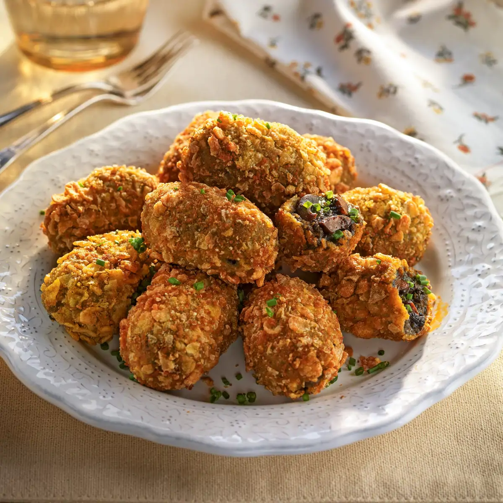

3 personas
25-35 mins

Un desayuno o cena saludable, rápido y proteico. El tofu sustituye al huevo con especias que le dan un sabor increíble.
2 personas
10-15 mins

Un clásico de la cocina vasca: merluza suave en salsa verde con guisantes, espárragos y huevo cocido.
2-3 personas
30-40 mins

Un guiso tradicional cremoso con albóndigas en salsa blanca suave, cebolla, zanahoria y champiñones.
3-4 personas
45 – 60 minutos

Cremosas por dentro y crujientes por fuera, estas croquetas de chipirones tienen un sabor intenso a mar, típicas de la cocina española.
4 personas
60 – 90 minutos (incluye reposo de la masa)

Un plato italiano cremoso y reconfortante, elaborado con arroz y verduras frescas, ideal como comida principal.
2-3 personas
30 – 40 minutos